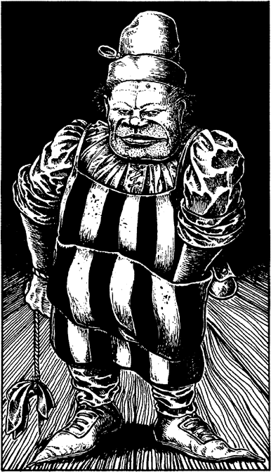

232
The innkeeper is a fat, oily individual with small, piggish eyes and a crooked smile. A grimy cloth hangs by a cord from his wrist, which he uses to wipe the bar. He seems unconcerned that the filthy rag does little but smear grease further across the counter.
‘You are in luck, my friend,’ he says, rummaging through the pockets of his striped apron. ‘We have one room left—room 17.’ He produces a plain iron key and sets it down upon the bar. ‘Three Gold Crowns—in advance.’

You pay the innkeeper (remember to erase the Gold Crowns from your Action Chart) and slip the key into your pocket. You are contemplating an early night when your rumbling stomach reminds you that you need to eat.
If you wish to take a seat and order some food, turn to 328.
If you decide to eat a Meal (from your Backpack) in the privacy of your room, you can head towards the stairs by turning to 219. 5
Footnotes
[5] You should deduct the Meal from your Backpack immediately if you decide to head to your room. The ensuing sections will make it clear why this is so.